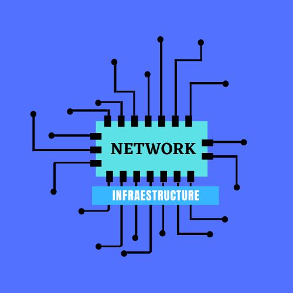

>La infraestructura de red y cableado es fundamental para cualquier empresa u organización. Hablar de infraestructura de la red es hacerlo de un conjunto de elementos para que esta funcione, tanto para internet como para el teléfono.
La infraestructura engloba todo el hardware y software necesario para la instalación y su uso. Por otra parte, hay que señalar que esto sirve para la comunicación ordinaria. Básicamente, la infraestructura engloba el cableado estructurado, la alimentación de los equipos, el SAI, los sistemas de seguridad, el cuarto de comunicaciones y la electrónica de red.Los elementos que componen la infraestructura de red son variados. Estos son los siguientes:
Cableado estructurado El cableado estructurado integra las comunicaciones de las distintas funcionalidades que se van a utilizar. Por lo tanto, es un elemento imprescindible para que la infraestructura pueda funcionar. De lo contrario, no sería posible.
Alimentación eléctrica de equipos de comunicaciones La alimentación eléctrica de los equipos de comunicaciones es otro punto imprescindible. No en vano, sin enchufes conectados a la electricidad, ubicados estratégicamente, es imposible funcionar durante mucho tiempo. No en vano, las baterías se agotan.
SAI: Sistema de Alimentación Ininterrumpida El SAI (Sistema de Alimentación Ininterrumpida) está concebido para trabajar en contextos de aumento y bajada de tensión repentina. De esta forma, Será posible actuar de forma continua ante distintas contingencias.
Sistema de seguridad y control El sistema de seguridad y control sirve para evitar incidencias que generen peligro. La idea es que se pueda controlar de forma centralizada de ahí que la revisión sea sencilla. Lo cierto es que, hoy en día, este punto ha ganado una importancia decisiva.
Centro de comunicaciones El centro de comunicaciones hace el papel de nodo o núcleo para transmitirlas y que haya conectividad. Evidentemente, sin que existiese el centro, tampoco sería posible trabajar.
Electrónica de red La electrónica de red también es importante, porque se trata de conocer cuál es la mejor infraestructura para cada caso. Hay que pensar que esta parte es la encargada de unir ordenadores y periféricos, generalmente a través de routers. No es un secreto que, gracias al desarrollo de las tecnologías WiFi, este elemento es de uso común y mayoritario.
MISIÓN:
Promueve el desarrollo de Internet como una infraestructura técnica global, un recurso para enriquecer la vida de las personas y una fuerza para el bien en la sociedad. Nuestro trabajo se alinea con nuestros objetivos para que Internet sea abierta, globalmente conectada, segura y confiable. Buscamos colaboración con todas las personas que comparten estos objetivos. En conjunto, nos centramos en:
-Construir y apoyar a las comunidades que hacen que Internet funcione;
Avanzar en el desarrollo y la aplicación de infraestructura, tecnologías y estándares abiertos de Internet; y Abogar por una política que sea consistente con nuestra visión de Internet.
VISIÓN:
Facilita el desarrollo abierto de estándares, protocolos, administración e infraestructura técnica de Internet.
Apoya la educación en los países en desarrollo específicamente, y donde exista la necesidad.
Promueve el desarrollo profesional y construye una comunidad para fomentar la participación y el liderazgo en áreas importantes para la evolución de Internet.
Proporciona información confiable sobre Internet.
Proporciona foros para la discusión de temas que afectan la evolución, El desarrollo y el uso de Internet en contextos técnicos, comerciales, sociales y de otro tipo.
Fomenta un entorno para la cooperación internacional, la comunidad y una cultura que permite que funcione la autogobernanza.
Sirve como punto focal para los esfuerzos de cooperación para promover Internet como una herramienta positiva para beneficiar a todas las personas en todo el mundo.
Proporciona gestión y coordinación para iniciativas estratégicas y esfuerzos de divulgación en contextos humanitarios, educativos, sociales y de otro tipo.
BIOGRAFIA:
Network infrastructure empresa constituida desde el año 1991 y su función principal ha consistido en dar soluciones en el área de las telecomunicaciones al creciente mercado COLOMBIANO, Con el interés de atender exitosamente la gran demanda de servicios y sistemas de Telecomunicaciones de los sectores financieros, comercial, industrial y gubernamental que requieren mantener y mejorar sus niveles de competencia y crecimiento, ha decidido invertir sus esfuerzos en crear y consolidar una empresa capaz de proveer los productos y servicios mas adecuados para las empresas e instituciones en nuestro país.